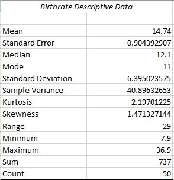
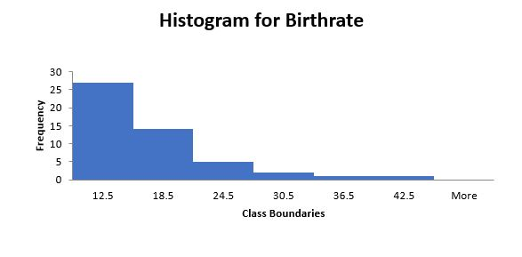
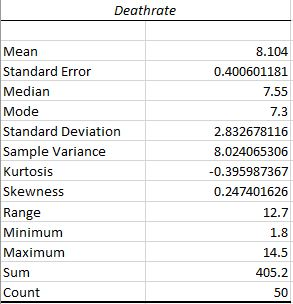
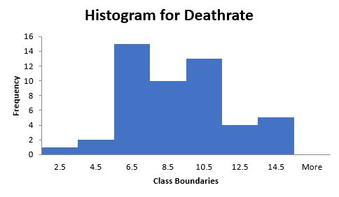
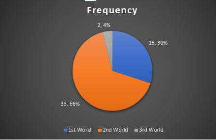
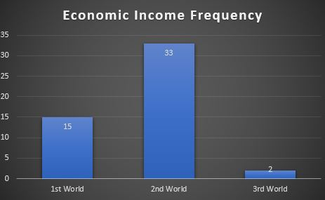
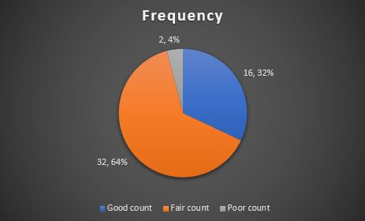
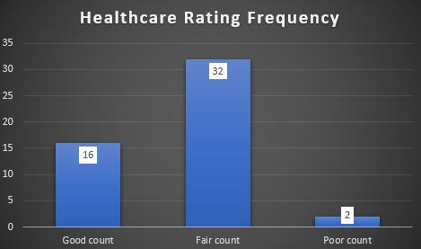

Birthrate
The pictures below are the descriptives and histogram for Birthrate
 The Histogram is more positively skewed and the Mean (Average) is 14.74.
Deathrate
The pictures below are the descriptives and histogram for Deathrate
 The Histogram is symmetrical and the Mean (Average) is 8.104.
Economic Income
The pictures below are the Pie graph and Bar graph of Economic Income
 66% of the countries are 2nd world countries and the rest are 1st world & 3rd world countires. The bar graph has a very big count of 2nd world countires.
Healthcare Rating
The pictures below are the Pie graph and Bar graph of Healthcare Rating
 64% of the countries are 2nd world countries and the rest are 1st world & 3rd world countires. The bar graph has a very big count of Fair ratings.